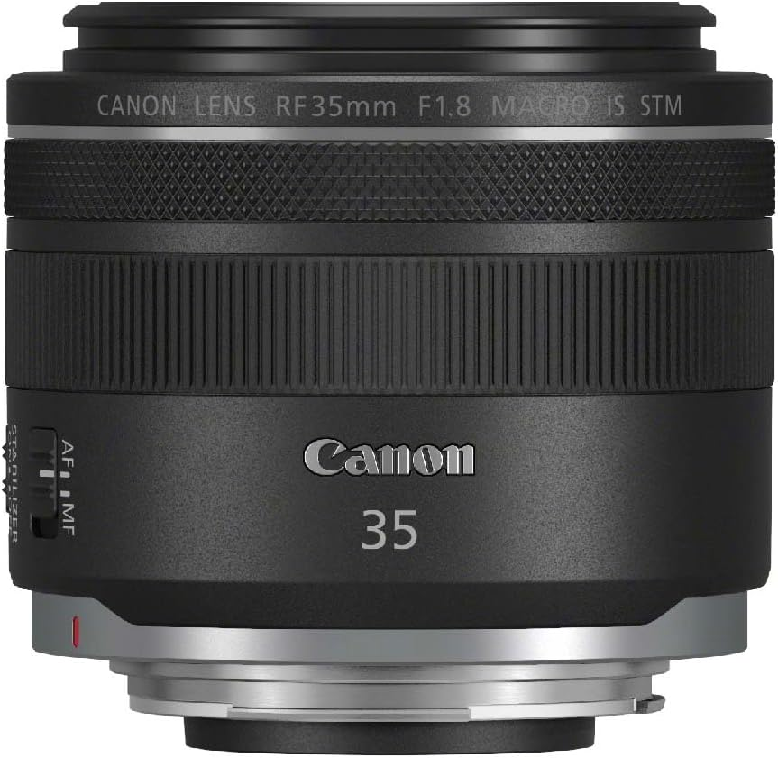

Canon RF35mm F1.8 MACRO IS STM レビュー｜「1本だけ持って行く」ならこれ以外考えられない

旅に1本だけ持って行くレンズを選べ、と言われたら迷わずこれを選ぶ。
広角スナップ、ポートレート、テーブルフォト、夜の街。花や植物のマクロ。旅先で出会う「これを撮りたい」のほぼすべてに、このレンズは応えてくれる。重量305g。最短撮影距離17cm。開放F1.8。5段分の手ブレ補正。このスペックを一本に詰め込んで、なぜここまでコンパクトなのか、最初に手にしたとき本当に驚いた。
スペック
| 焦点距離 | 35mm（フルサイズ対応） |
|---|---|
| 開放F値 | F1.8 |
| 手ブレ補正 | 5段分（ボディ協調で最大7段） |
| 最短撮影距離 | 17cm（ハーフマクロ・0.5倍） |
| 重量 | 約305g |
| 絞り羽根 | 9枚（円形絞り） |
| AF | STM（静音・滑らか） |
| コントロールリング | あり |
| 対応マウント | RFマウント（EOS Rシリーズ全機種） |
35mmという画角が持つ「人間の目に近い自然さ」
50mmが「標準」と呼ばれるのはよく知られているが、個人的には35mmの方が「人間が実際に感じる空間の広がり」に近い気がしている。目の前の光景を自然に切り取れる。広すぎず、狭すぎない。
スナップで1本だけ持つなら35mmという声は昔から根強いが、このレンズを使うとその理由が体でわかる。街を歩きながら、気になる路地を見かけたとき。カフェの窓から差し込む光を見たとき。カメラを構えた瞬間に、見た通りの画角がそこにある。ズームする必要がない。足で動けばいい。その感覚が、撮影を純粋に楽しくする。
テーブルに置かれた料理、庭に咲いた一輪の花、旅先で見つけた看板の文字。35mmの広角単焦点でここまで寄れるレンズは他にほとんどない。スナップカメラとマクロレンズの2本分が1本に収まっている感覚だ。
開放F1.8の「ボケ」は単焦点の証明だ
Lレンズではない。でも「隠れLレンズ」と呼ぶユーザーが多い理由は使えばわかる。
開放F1.8でも中心部の解像感は非常に高く、9枚羽根の円形絞りが生む玉ボケは角張らずに柔らかい。ポートレートでF1.8まで開けたとき、背景のとろけ方がとにかく気持ちいい。暗い室内でも、ISO感度を無理に上げずに撮れる明るさ。夜のカフェ、夕暮れの街、薄暗い神社——このレンズがあれば怯まなくなった場面が確実に増えた。
5段分の手ブレ補正が「マクロ撮影」を変える
マクロ撮影は被写体に近いほど手ブレの影響が大きくなる。最短17cmまで近づいた状態での手持ち撮影は、手ブレ補正なしでは厳しい。
このレンズのISは静止画だけでなく動画でも恩恵が大きい。EOS R5やR6などボディ側にも手ブレ補正がある機種との組み合わせでは協調制御が働き、最大7段分まで補正効果が高まる。三脚なしで花や小物をじっくり接写できる安心感は、使い始めるまで想像以上だった。
重いレンズは家に置いてきがちになる。このレンズは305gで、EOS Rシリーズの軽量ボディと組み合わせればトータル700g台の軽快なシステムになる。「持って行こうかどうか迷う」がなくなるのが、一番の強みかもしれない。
正直に言う「弱点」
開放F1.8では四隅に周辺光量落ちがある。風景写真で均一な明るさが欲しい場合は少し気になる場面もある。Lightroomで補正できるレベルだが、知っておいた方がいい。
逆光時のパープルフリンジ（色収差）も、金属やガラスの縁で出ることがある。絞ればほぼ解消するが、開放で逆光を多用する人には留意点だ。Lレンズと比べれば、フレアへの耐性は一段落ちる。
35mmという単焦点の宿命で、遠くの被写体に対しては無力だ。野鳥、スポーツ、遠景のポートレート——そういった用途には向かない。ただしその「割り切り」こそが、このレンズの完成度を高めている理由でもある。
結論：EOS Rユーザーが最初に買うべき単焦点
RFマウントには高価なLレンズが並んでいる。RF35mm F1.4 L VCMも存在する。でも重量は555gで価格も大幅に上がる。
日常の撮影、旅、家族の記録——そういった場面で本当に使い続けられるレンズはどちらか。答えは明らかだ。305gのこのレンズは、持ち続けられるから使い続けられる。使い続けるから、写真が上手くなる。EOS Rシリーズを手にしたなら、このレンズを最初の単焦点にして間違いない。
📷 Canon RF35mm F1.8 MACRO IS STM をチェックする